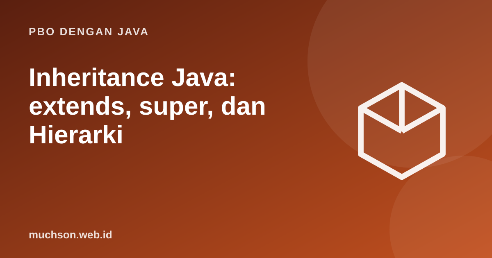

Beranda › Artikel › PBO dengan Java
PBO dengan JavaInheritance Java: extends, super, dan Hierarki
Pewarisan memungkinkan class baru memakai dan memperluas class yang sudah ada. Dipakai tepat, ia menghilangkan duplikasi dan memodelkan hubungan "adalah sebuah". Dipakai berlebihan, ia menghasilkan hierarki kaku yang sulit diubah.
Sebaiknya sudah paham: enkapsulasi, konstruktor

Tujuan belajar
Setelah membaca dan mencoba materi ini, Anda mampu:
- membuat subclass dengan extends dan memanggil super
- memprediksi urutan pemanggilan konstruktor
- melakukan overriding dengan @Override dan memahami aturannya
- menjelaskan class Object dan method toString/equals
- menilai kapan memilih komposisi dibanding pewarisan
Hubungan "adalah sebuah"
class Pegawai {
protected String nama;
protected double gajiPokok;
Pegawai(String nama, double gajiPokok) {
this.nama = nama;
this.gajiPokok = gajiPokok;
System.out.println(" konstruktor Pegawai");
}
double gaji() { return gajiPokok; }
@Override public String toString() { return nama + " menerima Rp" + String.format("%.0f", gaji()); }
}
class Manajer extends Pegawai {
private double tunjangan;
Manajer(String nama, double gajiPokok, double tunjangan) {
super(nama, gajiPokok); // wajib di baris pertama
this.tunjangan = tunjangan;
System.out.println(" konstruktor Manajer");
}
@Override double gaji() { return super.gaji() + tunjangan; } // memperluas perilaku induk
}
class Teknisi extends Pegawai {
private int jamLembur;
Teknisi(String nama, double gajiPokok, int jamLembur) {
super(nama, gajiPokok);
this.jamLembur = jamLembur;
}
@Override double gaji() { return gajiPokok + jamLembur * 50_000; }
}
public class Main {
public static void main(String[] args) {
System.out.println("membuat Manajer:");
Pegawai m = new Manajer("Rina", 8_000_000, 3_000_000);
Pegawai t = new Teknisi("Dodi", 5_000_000, 10);
System.out.println(m);
System.out.println(t);
}
}membuat Manajer:
konstruktor Pegawai
konstruktor Manajer
konstruktor Pegawai
Rina menerima Rp11000000
Dodi menerima Rp5500000
Aturan overriding
- Gunakan
@Override: kompiler akan memberi error bila method tidak benar-benar menimpa (salah ketik nama atau parameter). - Nama, parameter, dan (kompatibel) tipe kembalian harus sama dengan method induk.
- Akses tidak boleh lebih sempit (public tidak bisa menjadi private).
- Method
finaltidak bisa ditimpa; classfinaltidak bisa diwarisi. - Method
statictidak ditimpa tetapi disembunyikan (hiding).
Semua class mewarisi Object
class Titik {
final int x, y;
Titik(int x, int y) { this.x = x; this.y = y; }
}
class TitikBaik {
final int x, y;
TitikBaik(int x, int y) { this.x = x; this.y = y; }
@Override public boolean equals(Object o) {
return o instanceof TitikBaik t && t.x == x && t.y == y;
}
@Override public int hashCode() { return 31 * x + y; }
@Override public String toString() { return "(" + x + ", " + y + ")"; }
}
public class Main {
public static void main(String[] args) {
System.out.println(new Titik(1, 2).equals(new Titik(1, 2))); // pakai equals bawaan Object (alamat)
System.out.println(new TitikBaik(1, 2).equals(new TitikBaik(1, 2)));
System.out.println(new TitikBaik(3, 4)); // toString kustom
}
}false
true
(3, 4)
Pewarisan atau komposisi?
Pelajaran dari pustaka standar
Contoh peringatan: kelas Stack yang mewarisi Vector (di pustaka lama Java) membuka semua method Vector sehingga pengguna dapat menyisip di tengah dan merusak sifat LIFO. Desain yang baik memakai komposisi.
Latihan mandiriCoba kerjakan dulu sebelum membuka jawaban.
1. Tambahkan class Direktur yang mewarisi Manajer dengan bonus tahunan di gaji.
Subclass baru dengan super(...) dan override gaji() yang memanggil super.gaji() + bonus.
2. Mengapa Java tidak mendukung pewarisan class ganda?
Menghindari ambiguitas (masalah berlian) saat dua induk punya method yang sama; kebutuhan itu diselesaikan dengan interface.
3. Apa yang terjadi bila subclass tidak memanggil super(...) dan induk tidak punya konstruktor tanpa parameter?
Error kompilasi: konstruktor induk yang tanpa argumen tidak ditemukan.
4. Tulis equals dan hashCode untuk class Mahasiswa dengan kunci nim.
Bandingkan nim di equals (dengan pemeriksaan tipe) dan hashCode dari nim.hashCode().
Ringkasan
- extends mewarisi atribut dan method; super mengakses induk dan memanggil konstruktornya.
- Konstruktor induk berjalan sebelum anak.
- Overriding dengan @Override; ikuti aturan akses dan tanda tangan.
- Pewarisan memodelkan is-a; utamakan komposisi bila hubungannya has-a.
Tanya jawab
Apa bedanya overriding dan overloading?
Overriding mengganti method induk pada subclass (tanda tangan sama); overloading menyediakan beberapa versi dengan parameter berbeda dalam satu class.
Apakah private ikut diwarisi?
Anggota private ada pada objek tetapi tidak dapat diakses langsung oleh subclass; gunakan method yang diwariskan untuk mengaksesnya.
Berapa dalam hierarki yang wajar?
Semakin dangkal semakin baik; tiga tingkat sudah patut dipertanyakan.
Referensi
- Oracle: Inheritance (Java Tutorials)
- Java SE API: Object
- Joshua Bloch, Effective Java (edisi ke-3, Addison-Wesley, 2018)
- The Java Language Specification